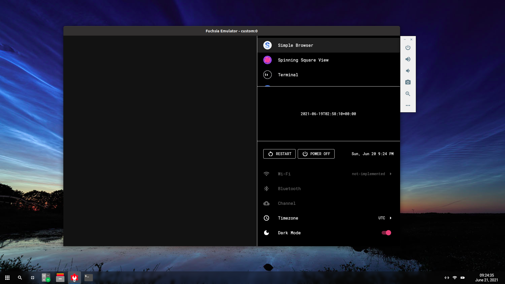

Fuchsia OS introduction
Google Fuchsia is an independent opensource operating system derived from LittleKernel. Fuchsia’s kernel based upon LK is called Zircon. Both kernels are a kind of kernel called a microkernel. Microkernels run the “minimum amount of software that can provide the mechanisms needed to implement an operating system.”
Zircon runs drivers inside the userspace so they have the least privilege they need to do their job, devices such as ethernet and USB drivers only have certain permissions to harden security. Zircon is much larger than a microkernel so in technical terms it’s not actually a microkernel. “… Fuchsia applies many of the concepts popularized by microkernels… does not strive for minimality … Fuchsia has over 170 syscalls, which is vastly more than that of a typical microkernel. Instead of minimality … guided by practical concerns about security, privacy, and performance.”
Fuchsia emulator running the development UI Emine.